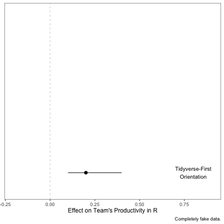

Upgrading to R #1: Excitement >> Skills
Getting the team excited matters more than initial skill level
This is the first in a series of posts sharing some insights on upgrading to R. See the index post for others.
Whether you’re a team leader trying to take your group to the next level, or an indvidual contributor just trying to infect your org with R love, finding companions is really important.
Finding the right people will determine whether you end up part of a crack R team or fall back to whatever you’re doing now. A few factors can ease the way from the desolate R-less place you might live now back to the to the beautiful shire full of free range R code (ok, swear I’m done with LOTR references).
Here’s my totally subjective estimate of some important factors:
Wired: Team’s enthusiasm for learning R
Tired: How much R they already know
This is pretty straightforward. By far the most important factor that will determine your team’s success in transitioning to R is whether they’re excited about it, and the least important is how much they already know. Learning R just really isn’t that hard. People who are excited to learn will do it, and those who aren’t won’t. It’s that simple.
Don’t know who’s excited and who’s not? Ask them! And don’t just ask whether they’re excited to learn R. What you really want to know is whether they’re excited to work on a team that operates with R at its core. Transitioning to R from Excel or Stata has a bunch of potential benefits. Making those benefits real requires a lot more than just writing some code. It’s a wholesale transition in terms of how the team thinks about work (see future blog posts for more on that).
Lesser Angels
Beyond enthusiasm, there are a couple of things you can do to make it easier, whether you’re a team member or the leader.
- Tidyverse-First Orientation: If you’ve been doing R for a while, you probably know this, but the Tidyverse is AWESOME. It takes the wonderful benefits of R and adds an opinionated take on what code should look like. If you’re just learning R, start with the Tidyverse. You’ll be glad you did because it’s magical.1
- Relentless R: Adoping R as a team isn’t really about a programming langauge, it’s organizational change. Writing code is easy. Changing hearts, minds, and workflows is hard. There are people who make whole careers out of this stuff. Don’t get down if it’s slow going. I’m skeptical it’s possible to really transition a team to R in less than 12 months.
- Learning Environment: More on this during Tip #2: Failure, but you’re trying to make room for people to learn. That means it’s important to make work a space where they won’t feel stupid for asking questions or making mistakes. Hopefully this is already true for your workplace…but it’s especially important if you’re trying to get your team to do something new and hard like use R. Every workplace is busy, but almost every one can spare an hour a week to do a mini-seminar on R, or to share a package of the week. On my team, we have a show-and-tell every Friday where people share something they’ve learned. Very often, that something is a fun new R thing!
- A sub-point to this: If you can, don’t expect that all this learning will take place outside of work. Some people on your team may have kids or parents they’re caring for, or other life circumstances that mean that they have less capacity to do out-of-work learning than others. They can still be amazing partners on your journey to R. If you’re the team lead, try and make space for them to learn. If not, make sure they’re included on at-work R plans.
Footnotes
This presentation by MilesMcBain on the magic of R packages was FANTASTIC - one of my favorites from RStudio::conf(2019).↩︎